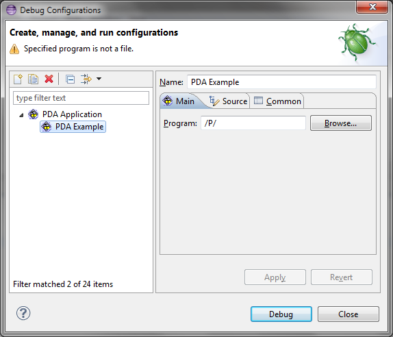

-XStartOnFirstThread VM argument
in the event your VM does not support it. This option can be configured per-launch configuration and is available on the standard Arguments
tab for Java configurations (Java Application, Eclipse, etc.).
A new global preference has been added so you can only allow exported classpath entries to be used during launching. Previously this was only customizable per launch configuration on the default classpath entry on the Java Classpath tab. The new preference does not affect launch configuration data, so no migration is needed.
The new preference can be found on the Java > Debug preference page.

Previously, contributors could only set an 'ok' or an 'error' state in their launch configuration tags / groups. Now in M3 contributors can set a warning state (message) for their tabs / groups - possibly warning users about set options that might be problematic, but do not necessarily need to prevent launching.
